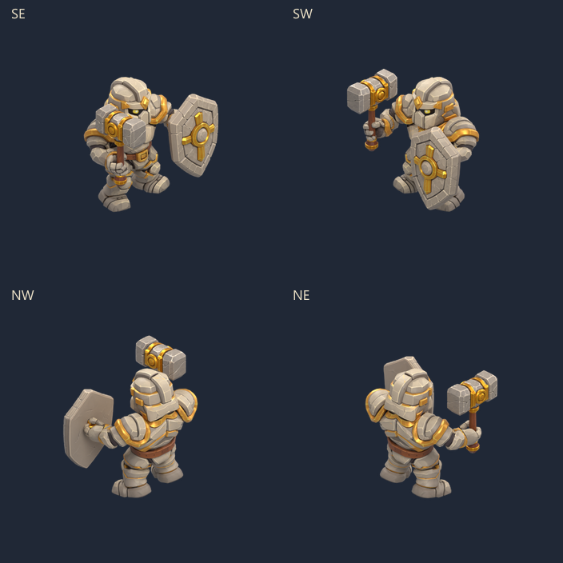

Paladin · dégâts et mort
Sprites rendus à partir du modèle équipé. Quatre vraies vues isométriques ; qualité et taille du personnage conservées. Les boucles ci-dessous ajoutent une pause de revue : les animations du jeu sont à lecture unique.
Dégâts · 720 ms
Pieds plantés, recul du buste, retour à la pose de garde. 8 poses.
Toutes les poses
Chute et mort · 750 ms

Genoux fléchis, lâcher du marteau et du bouclier, affaissement sur le côté, pose finale maintenue. 10 poses.
Toutes les poses
Godot : ouvrir PaladinHurt.tscn ou PaladinDeath.tscn puis F6. Replay, pause, image suivante, vitesses 0,5× à 2× et répétition facultative. Les deux scènes sont isolées des raids et des sauvegardes.
Sources, reproduction et limites